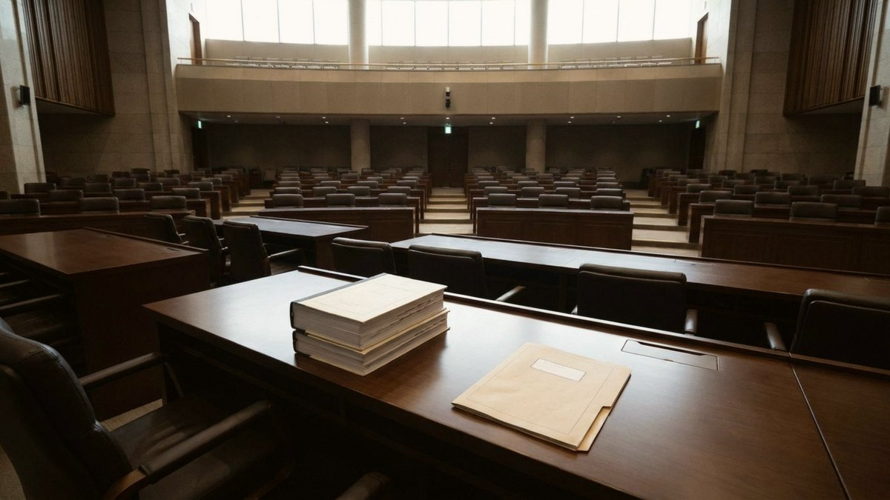

뉴스에서 '조작기소 특검법'과 '공소취소 특검법'이라는 이름을 번갈아 들었다면 둘은 같은 법이에요. 더불어민주당은 11월 5일 본회의 처리를 추진하고 있어요. 국민의힘은 이 법이 상정되면 그날 올라오는 모든 법안에 필리버스터(무제한 토론)를 걸겠다고 예고했고요. 결론부터 말하면 수정안에서는 특검이 검찰 등이 맡던 사건을 넘겨받아 공소를 유지할지 정하는 권한(사실상 공소취소권)과 사건 이첩 요구권이 빠지는 방향이에요. 다만 수사 대상 12건 중 8건이 이재명 대통령 관련 사건이라는 구조는 그대로라서 '이해충돌' 논쟁은 끝나지 않았어요.

정식 이름은 '윤석열 정권 검찰청, 국가정보원, 감사원 등의 조작수사·조작기소 등 의혹의 진상규명을 위한 특별검사 임명 등에 관한 법률안'이에요. 민주당 천준호 의원이 2026년 4월 30일 대표발의했어요. 40여 일 동안 진행된 '윤석열 정권 정치검찰 조작 기소 진상규명 국정조사 특별위원회'의 후속 조치예요.
취지는 윤석열 정부 시절 검찰 등이 야당과 정치적 반대 세력을 겨냥해 표적수사와 조작기소를 했다는 의혹을 특검이 규명하자는 거예요. 수사 대상은 대장동·위례신도시 개발 의혹, 쌍방울 대북송금 사건 등 12건이고 이 가운데 8건이 이 대통령 관련 사건이에요. 여기서 많이들 헷갈려요. 특검이 들여다보는 대상은 대통령의 혐의 자체가 아니에요. 그 사건들을 수사하고 기소하는 과정에서 증거 조작이나 강압 수사 같은 위법이 있었는지를 보는 법안이에요.
민주당은 11월 3일 의원총회에서 수정 방침과 함께 이 법을 당론으로 채택했어요. 4일에는 법제사법위원회 전체회의에 상정돼 법안심사제1소위원회로 넘어갔어요. 국민의힘 위원들은 의사진행발언을 두고 서영교 법사위원장과 다투다 회의 시작 약 10분 만에 모두 퇴장했어요. 법안이 통과되면 이재명 정부 들어 7번째 특검이 돼요.
원안 숫자와 수정안 숫자를 섞어 읽는 실수가 가장 흔해요. 4월 원안을 다룬 기사와 11월 수정안을 다룬 기사가 함께 검색되기 때문이에요. 아래 표는 보도로 확인된 내용만 담았어요. 수정안은 아직 소위 심사 단계라 최종 조문은 바뀔 수 있어요.
| 항목 | 4월 원안 | 11월 수정안(보도 기준) |
|---|---|---|
| 사건 이첩 요구권 | 검찰·4대 특검 등이 맡은 사건의 이첩을 요구할 수 있고, 거부해도 15일이 지나면 강제 이첩 | 삭제 |
| 공소유지 여부 결정권(사실상 공소취소권) | 있음(제8조 제7항 "공소유지 여부의 결정을 포함한다") | 삭제 |
| 특검 직무 범위 문구 | 수사, 공소제기, 공소유지 및 그 여부의 결정 | 수사와 공소제기 여부의 결정 및 공소유지 |
| 수사 대상 | 12건(8건이 대통령 관련) | 12건 유지, 문재인 정부 관련 사건 추가 검토 |
| 수사 인력 | 파견검사 30명·파견공무원 170명·특검보 6명·특별수사관 150명 이내 (최대 357명) | 총 309명 |
| 수사 기간 | 준비기간을 빼고 기본 90일, 최장 180일 | 준비 20일 포함 최장 200일 |
| 특검 임명 | 교섭단체 등이 1명씩 추천하면 대통령이 그중 1명 임명 | 바뀌었는지 보도로 확인되지 않음 |
수사 기간은 숫자만 보면 늘어난 것처럼 보여요. 실제로는 원안이 준비기간을 빼고 계산했고 수정안 보도는 준비 20일을 포함해 계산한 거예요. 기본 90일에 자체 연장 30일 두 번, 대통령 승인 연장 30일이라는 뼈대는 같아요.
직무 문구에 '공소유지'라는 말이 남아 있어서 헷갈릴 수 있어요. 이첩 요구권이 함께 빠졌으니 특검이 다른 기관의 재판 사건을 넘겨받는 통로는 닫힌다는 게 민주당 설명이에요. 한병도 원내대표는 공소취소 조항은 물론 그와 같은 효과를 낼 수 있는 조항까지 모두 삭제했다고 말했어요.
원안에서 쟁점이 컸던 이유부터 볼게요. 형사소송법상 공소취소는 1심 판결 선고 전까지 할 수 있어요. 대통령 관련 사건 가운데 6건은 1심 재판이 멈춘 상태라 원안대로라면 특검이 사건을 넘겨받아 공소를 취소할 수 있다는 분석이 나왔어요. 이 대통령은 9월 18일 기자회견에서 기존 기소 사건의 이송이나 처분에 관한 조항은 지우고 진상 규명에만 집중해 달라고 국회에 요청했어요. 이번 수정은 이 요청을 반영한 거예요.
그런데도 국민의힘은 이 법을 계속 '공소취소 특검법'이라고 불러요. 특검에 공소취소 권한이 없어도 수사 결과가 나중에 대통령 관련 사건의 공소를 취소하는 명분이 될 수 있다고 보기 때문이에요. 법사위 야당 간사인 박형수 의원은 이번 수정을 두고 "노골적 방탄에서 교묘한 방탄으로 수법을 바꾼 것"이라고 했어요. 반대로 서영교 법사위원장은 대통령 공소취소 내용을 소위에서 아예 빼는데도 공소취소 법안이라고 부르는 건 허위 사실이라고 반박했어요.
그래서 다툼은 이제 조문보다 구조를 향해요. 대통령 관련 사건이 대부분인 특검을 여당이 추진하고 대통령이 임명하는 구조가 괜찮은지를 두고 다퉈요.
민주당의 가장 강한 논리는 '검찰권 남용은 검찰 스스로 조사할 수 없다'는 거예요. 검찰이 정치적 목적으로 사건을 조작하거나 무리하게 기소했는지 밝히려면 독립된 특검이 필요하다는 입장이에요. 국회 국정조사에서 다룬 7개 사건이 출발점이고, 여기에 5개 사건이 더해져 12건이 됐어요.
두 번째 근거로는 가장 큰 논란거리를 이미 걷어냈다는 걸 들어요. 공소취소·공소유지 결정권과 이첩 요구권을 모두 지웠으니 특검은 진상 규명에 집중하게 된다고 설명해요. 대통령도 특검 자체에는 동의하면서 이 조항만 빼 달라고 했어요. 민주당은 이견이 있으면 법안 심사에서 구체적인 의견을 내면 되는데 심사도 하기 전에 필리버스터부터 예고하는 건 무책임하다고 비판해요. 시기 판단도 있어요. 처리가 해를 넘길 경우 총선 준비 시기까지 수사가 이어져 부담이 될 수 있다는 판단이 깔려 있다고 한국경제가 보도했어요.
국민의힘의 가장 강한 논리는 이해충돌이에요. 수사 대상 12건 중 8건이 대통령 관련인데 그 특검을 대통령이 임명하는 구조를 문제 삼아요. 현직 검사들 사이에서도 대통령 본인의 형사사건을 재수사하는 특검을 여당 주도로 만드는 건 권력의 사유화라는 비판이 나왔어요. 조작기소 의혹은 진행 중인 재판에서 공격과 방어로 가려야 하고 재판에 영향을 줄 특검은 삼권분립과 재판 독립을 해친다는 주장도 있어요.
두 번째 근거는 앞뒤가 맞지 않는다는 지적이에요. 수사와 기소를 분리하겠다며 검사의 수사권을 없애 놓고 이 특검에는 공소청 검사 30명을 파견해 수사권을 다시 준다고 꼬집어요. 309명이 최장 200일 동안 수사하는 규모도 지나치다고 봐요. 특검은 원래 여권의 권력형 범죄를 기존 수사기관이 제대로 수사하기 어려울 때 야당 주도로 추진해 온 제도인데 그 취지와 반대라는 비판도 있어요.
| 쟁점 | 찬성 측(민주당) | 반대 측(국민의힘) |
|---|---|---|
| 목적 | 검찰의 표적·조작 수사 의혹 진상 규명 | 대통령 관련 사건의 공소취소 명분 쌓기 |
| 공소취소 | 관련 조항과 같은 효과 조항까지 삭제 | 권한이 없어도 수사 결과가 명분이 됨 |
| 이해충돌 | 대상은 대통령 혐의가 아니라 검찰의 수사 과정 | 12건 중 8건이 대통령 관련인데 대통령이 임명 |
| 제도 일관성 | 검찰이 자기 잘못을 조사할 수 없어 특검 필요 | 수사·기소 분리 주장과 모순, 검사 30명 파견 |
| 국회 절차 | 심사 전 필리버스터 예고는 민생 법안까지 막는 정쟁 | 상정 시 모든 법안 필리버스터로 저지 |
결론은 '늦출 수는 있지만 막기는 어렵다'예요. 국회법 제106조의2에 따르면 필리버스터는 재적의원 3분의 1 이상이 요구하면 시작돼요. 재적의원 3분의 1 이상이 종결동의를 내면 24시간 뒤 무기명투표를 하고 재적의원 5분의 3 이상이 찬성하면 끝나요. 민주당 등 범여권 의석은 이 요건을 채워요. 실제로 지난 7월 21일 종합특검 개정안은 국민의힘의 필리버스터를 24시간 뒤 강제종결한 다음 재석 173인 전원 찬성으로 가결됐어요.
필리버스터 도중 회기가 끝나면 토론도 끝난 것으로 보고 그 안건은 다음 회기에 바로 표결해요. 노란봉투법 등 3건이 이렇게 다음 회기에 처리됐어요.
국민의힘이 '모든 법안 필리버스터'를 꺼낸 건 시간을 벌기 위해서예요. 법안마다 24시간을 기다려야 하니 하루에 한 건 정도만 처리할 수 있게 돼요. 그래서 특검법을 몇 번째로 상정하느냐에 따라 표결 날짜가 달라져요.
시시비비노트가 정리한 체크리스트예요.
Q. 법이 통과되면 대통령 재판이 바로 없어지나요?
수정안대로라면 특검에는 기존 재판 사건을 넘겨받거나 공소유지 여부를 정할 권한이 없어요. 대통령 관련 재판은 당선 뒤 중단된 상태예요. 특검 수사 결과가 나중에 재판에 어떤 영향을 줄지는 양쪽 주장이 갈려서 법적 효과를 단정하기는 어려워요. 구체적인 법률 해석이 필요하면 법률 전문가의 의견을 확인하는 게 좋아요.
Q. 특검은 누가 임명하나요?
원안은 추천 의뢰를 받은 교섭단체 등이 후보를 1명씩 추천하면 대통령이 그중 1명을 임명하는 방식이에요. 수정안에서 이 방식이 바뀌었는지는 아직 보도로 확인되지 않았어요.
Q. 왜 '7번째 특검'인가요?
3대 특검(내란·김건희·순직해병), 2차 종합특검, 관봉권 띠지 상설특검, 선관위 특검이 이미 가동됐거나 가동 중이라서예요. 문화일보는 이재명 정부 출범 1년 반 만에 7개가 되면 역대 정부 최다라고 보도했어요.
2026년 11월 4일 기준, 법사위 상정 관련 주요 언론 보도와 국회법 조항을 확인해 작성했어요.